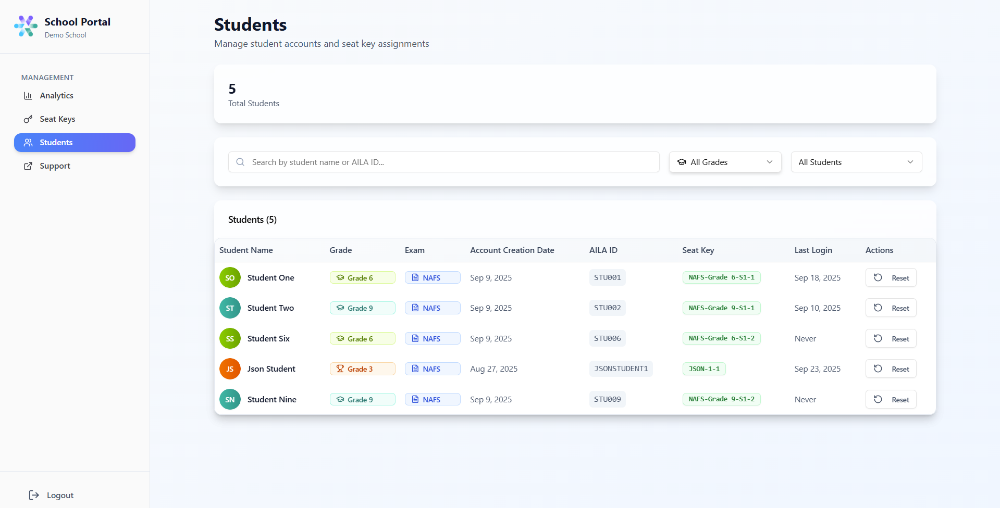
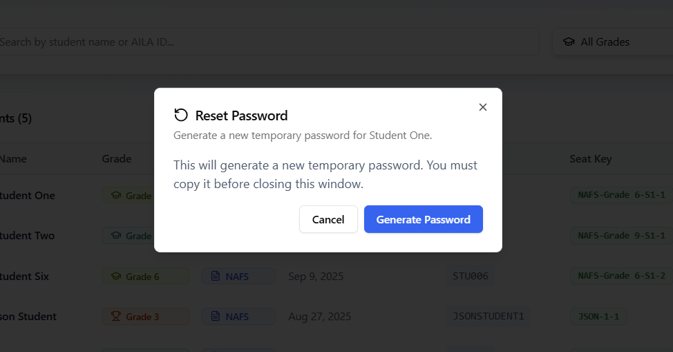
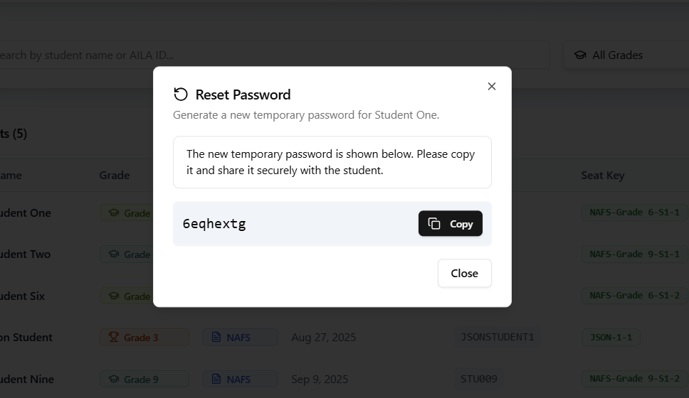

Students
Purpose
Manage student accounts, view seat key assignments, and reset passwords when needed.

Key Metrics
- Total Students (5) → Number of student accounts created in the school portal.
Filters & Search
- Search Bar → Find a student quickly by name or AILA ID.
- Grade Filter → View students by specific grade level.
- Student Filter → Choose between All Students, With Seat, or Without Seat.
Tip
Use this to make sure all students who should have access are assigned a seat key.
Student Table
The table provides detailed information for each student.
Reset Password
When you click Reset, you can generate a temporary new password:
- Click Generate Password.
- A new password appears — copy it before closing the window.
- Share the password securely with the student.
Important
If you close the window without copying, the password cannot be retrieved again and must be regenerated.


🧠 How to Use
- Use the search bar to find a key by student, code, or exam.
- Apply filters to refine the list by grade, exam, or status.
- Assign unused keys to students who haven’t yet received one.
- Check the student details pop-up to confirm login activity.
- Regularly review the metrics at the top to balance seat usage.
- Reset passwords when students are unable to log in.